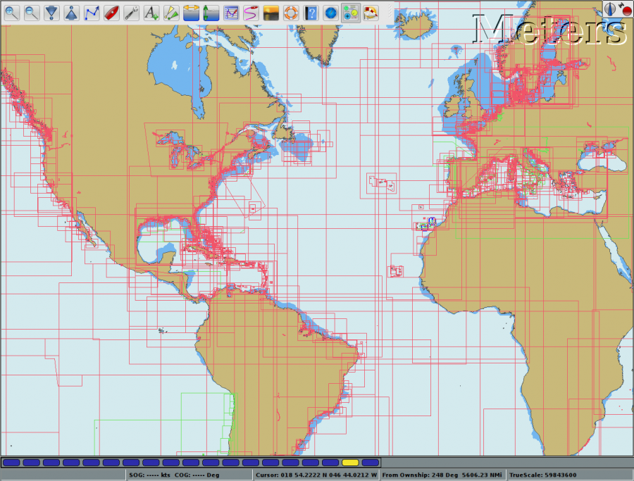
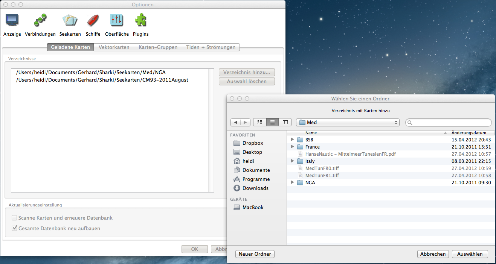
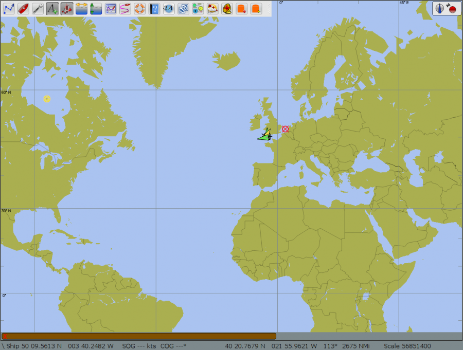
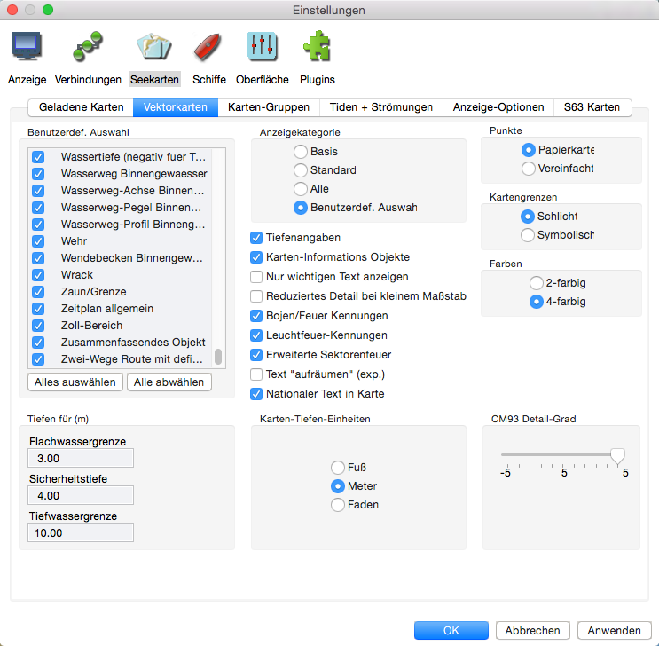

Installation von Karten

Einige installierte Karten mit ihren Umrissen (Outline).
Die potentielle Gefahr wächst für den Seefahrer mit digitalen Karten, weil er weiter in die Karte hinein zoomen kann, als es die Quelldaten der Karte beinhalten.
Der fortlaufend automatische Update der Schiffsposition auf der Kartenanzeige kann dem Navigator ein falsches Sicherheitsgefühl geben, wenn er der Genauigkeit einer Karte
vertraut, die die Karte aufgrund der Kartenquellen in diesem Maßstab nicht haben kann.
Bowditch Ausgabe 2002 Seite 412.
OpenCPN enthält keine vorinstallierten Karten. Es obliegt dem Anwender, Karten zu finden und zu installieren. Wenn Sie weiterlesen, erhalten Sie Informationen, welche Kartenformate OpenCPN unterstützt sowie Hinweise, wo freie Karte nach unserem Wissen erhältlich sind.
Zum Installieren von Karten muß OpenCPN das Verzeichnis bekannt gemacht werden, in dem Karten eines unterstützten Formats enthalten sind. Das sind BSB Rasterkarten, S57 Vektorkarten ENC und CM93/2 C-Map Vektorkarten. CM93/3 und 4 werden nicht unterstützt, da sie zum kommerziellen Schutz verschlüsselt sind. Verweisen Sie OpenCPN nicht auf eine bestimmte Karte, sondern verweisen Sie auf das Verzeichnis mit den Karten. Laden Sie einige Karten herunter (siehe unten) und organisieren Sie sie nach Ihren Wünschen. Ein guter Platz zum Abspeichern herunter geladener Karten wäre ein neues Verzeichnis "Seekarten" in /Users/Anwendername/Dokumente/. Natürlich müssen die dort gespeicherten Karten gegebenenfalls nach dem Herunterladen entpackt worden sein. Bei vielen Karten ist eine Unterteilung in Unterverzeichnisse (z.B. CM93-2010, ENCs und/oder Ländernamen) sinnvoll.
Öffnen Sie die Einstellungen mit Klick auf . Gehen Sie auf "Anzeige" und aktivieren Sie "Kartenumrisse anzeigen" zur Anzeige-Hilfe der geladenen Karten.

Dann klicken Sie auf "Seekarten" und dort Reiter "Geladene Karten".

Mit Klick auf den Button "Verzeichnis hinzu..." öffnet sich das Datei-Verzeichnis-Dialogfenster, wo Sie das Verzeichnis mit Ihren Karten auswählen. In diesem Beispiel finden wir einige Rasterkarten des Mittelmeers im Verzeichnis /Users/heidi/Documents/Gerhard/Sharki/Seekarten/Med/NGA/ und hatten dies Verzeichnis ausgewählt. Mit Klick auf die "OK" Schaltfläche verarbeitet OpenCPN die Auswahl und die Karten können jetzt verwendet werden. Aktivieren Sie auch das Kästchen "Gesamte Datenbank neu aufbauen" vor allem dann, wenn sich Ihr aktives Kartenverzeichnis ändert durch Hinzufügen oder Löschen.
Beachten Sie: OpenCPN müssen die Verzeichnisse mit Karten und keine einzelnen Karten bekannt gemacht werden!
Speicherort für Ihre Karten
Es wird empfohlen, die Dateien mit Ihren Karten in einem separaten Verzeichnis (z.B. mit Namen "Seekarten") im Dokumenten-Bereich zu speichern. Sinnvollerweise legen Sie
für dieses separate Verzeichnis weitere Unterverzeichnisse an für die verschieden Länder, Kartentypen (z.B. CM93) usw. Nur diese Unterverzeichnisse werden dann wie im Beispiel
oben bei Bedarf OpenCPN hinzugefügt. Diese Karten-Verzeichnisse sind also unabhängig von der OpenCPN-Installation und können so von jeder OpenCPN-Version verwendet werden, die
Sie gerade installiert haben.
Für BSB4 und NV-Karten sind entsprechende Plugins notwendig, die es nur für Windows gibt.
Bei der Erstinstallation enthält OpenCPN keine Karten. Zum schnellen Einstieg können Sie hier freie Karten finden.
Arbeiten mit Ihren Karten.
Sie können die Karten klicken und mit Ihrer Maus verschieben. Mit dem Scroll-Rad kann vergrößert und verkleinert werden. Rechts-Klick bringt ein Menü mit nützlichen Aktionen. Der Inhalt des Menüs hängt von den Umständen ab. Zur weiteren Erklärung lesen Sie im Handbuch nach.
Verwenden Sie OpenCPN zum ersten Mal, sehen Sie eventuell nur die in OpenCPN hinterlegte, weltweite Hintergrund-Karte statt der installierten Karten. Das bedeutet lediglich, daß OpenCPN einen anderen Bereich als Ihre installierten Karten anzeigt. Scrollen Sie dann zu dem Bereich Ihrer installierten Karten, beschrieben unter "Einige Tipps" unten. Alternativ öffnen Sie den Menüpunkt "Ansicht zentrieren..." des Kontextmenüs (rechte Maustaste) und geben Sie einen Koordinatenpunkt Ihrer Karten ein. Beim ersten Start von OpenCPN ist die Anzeige zentriert in Georgetown, Süd-Karolina.

Hintergrund-Weltkarte
Beginnend mit Vektor Karten?
Sind Vektor-Karten mit OpenCPN neu für Sie (z.B. CM93 v2), dann folgen Sie bitte dieser kurzen Anleitung:
- Gehen Sie zu den Einstellungen (Optionen)
und Reiter Vektorkarten und machen Sie die Einstellungen wie unten für die Anzeigekategorie.
 - Drücken Sie diesen Button in der Werkzeugleiste zur Textanzeige.
Das sind nicht die perfekten Einstellungen, aber Sie sehen damit das Meiste, was man von Vektor-Karten erwartet.
Sobald Sie etwas sicherer im Gebrauch von OpenCPN sind und bevor Sie Vektor-Karten zur Navigation
verwenden, lernen Sie die Einstellungen unter der Vektor-Karten Lasche näher kennen beim Lesen des
Abschnitts Vektor Karten Anzeige.
Laden von Vektor-Karten
Wird eine Vektor-Karte erstmals verwendet, muß OpenCPN dessen Daten verarbeiten und die Informationen in ein internes Anzeigeformat transformieren. Je nach Ihrem Computer kann das etwas dauern. Diese interne SENC Karte wird dann für die Zukunft gespeichert. Die erzeugten Dateien sind relativ groß, aber das Format ist für schnelles Laden optimiert. Die SENC Dateien werden im SENC Verzeichnis unter dem gleichen Verzeichnis wie "opencpn.conf" bzw. "opencpn.ini" gespeichert. Vermutlich möchten Sie nicht SENCs für alle Ihre S57 ENCs erzeugen, bis Sie eventuell planen, dorthin zu segeln...
Updaten von Vektor Karten
Herausgeber von Vektor Karten wie NOAA und EAHC verteilen regelmäßig Updates. OpenCPN erneuert die erzeugten SENCs automatisch. Die Karte selber, die Basiskarte, heißt "Name".000, das erste Update ist "Name".001 usw. Als Anwender müssen Sie nur darauf achten, daß die Update-Dateien am selben Platz wie die Basiskarte gespeichert werden. Im Falle einer neuen Karte gibt es eine neue "Name".000 Datei. Ersetzen Sie die alte Datei mit der neuen Datei und OpenCPN erneuert die SENC Datei.
CM93 Karten
CM93 Version-2 Karten unterscheiden sich von den S57 Vektor-Karten und haben ihre eigene Datenstruktur bestehend aus Nummern für Verzeichnisse
und Dateien. Zum Laden dieser Karten in OpenCPN wird nur das oberste Verzeichnis in die Liste der "Aktiven Kartenverzeichnisse" eingetragen. Das
oberste Verzeichnis von CM93 enthält 144 Unterverzeichnisse mit Namen von "00300000" bis "04501020" sowie sechs andere Dateien. Diese
Unterverzeichnisse umfassen je einen geografischen Bereich von 40° x 40°. Die ersten 4 Zahlen beschreiben die Breite und die letzten 4 die
Länge der Süd-West Ecke des betreffenden Gebiets.
Schlüssel zum Verständnis der Zahlen ist, daß das CM93 Koordinatensystem der Welt am Südpol startet oder genauer bei
Breite -90° und Länge 0° und von da nach Nord und Ost mit einem Faktor 3 für jedes Grad Breite und Länge weiterführt.
Der Bereich 00300000 hat daher die Süd-West Ecke bei Breite -90° + 0030 : 3 = -80° oder 80°Süd und Länge 0°Ost und deckt diesen
Bereich ab: Breite 80°Süd bis 40°Süd und Länge 0° bis 40°Ost.
Der Bereich 04501020 ist somit Breite -90° + 0450 : 3 = 60° und Länge 1020 : 3 = 340° minus 360° ergibt -20° oder 20°West. Damit ist die
Süd-West Ecke bei 60°N und 20°W.
Bei einem weiteren Beispiel hat der Bereich 03900840 die Süd-West Ecke bei 40°N und 80°W.
Jedes dieser Unterverzeichnisse enthält wiederum Verzeichnisse mit den individuellen Karten. Geordnet nach Skalierungen von niedrig zu
hoch sind das Z, A, B, C, D, E, F und G. Beachten Sie, daß im allgemeinen nicht alle in jedem Unterverzeichnis vorhanden sein müssen.
Z umfaßt den 40° x 40° Bereich und OpenCPN verwendet typisch eine 1:3.000.000 Skalierung,
A umfaßt den 20° x 20° Bereich und OpenCPN verwendet typisch eine 1:1.000.000 Skalierung,
B umfaßt den 10° x 10° Bereich und OpenCPN verwendet typisch eine 1:200.000 Skalierung,
bis zu
...
G umfaßt den 20' x 20' Bereich und OpenCPN verwendet typisch eine 1:3.500 Skalierung.
Die einzelnen Karten-Bereiche in diesen Verzeichnissen folgen der gleichen Logik des Namen-Schemas wie oben beschrieben.
Einige Tipps